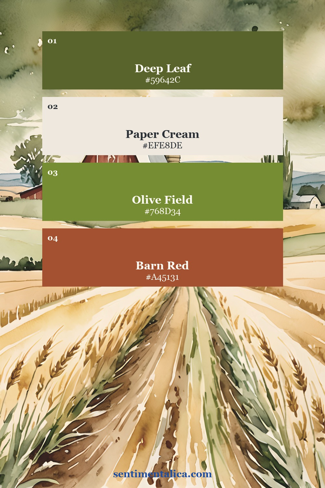
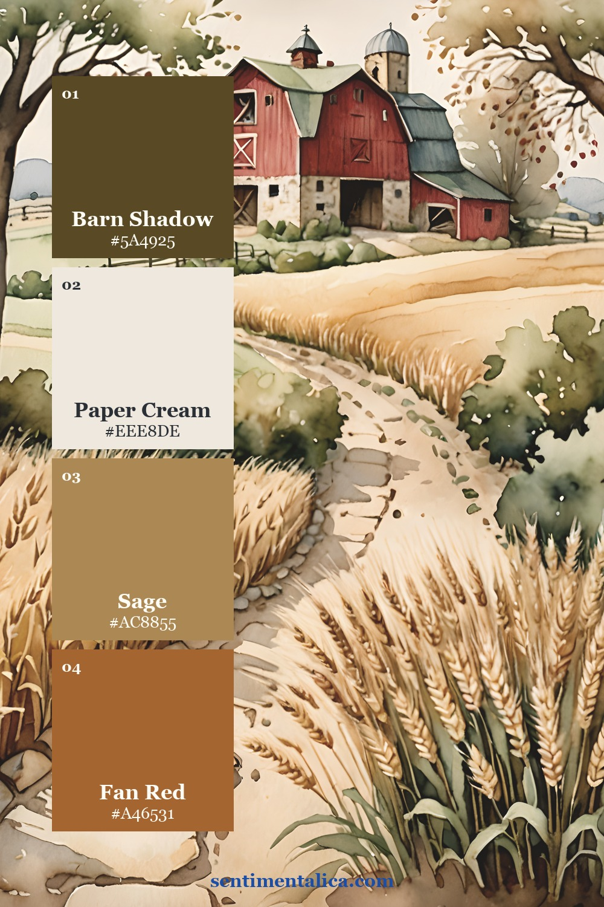
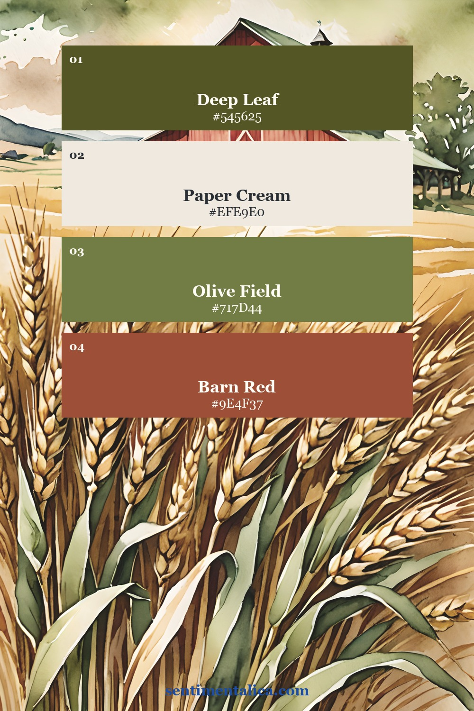
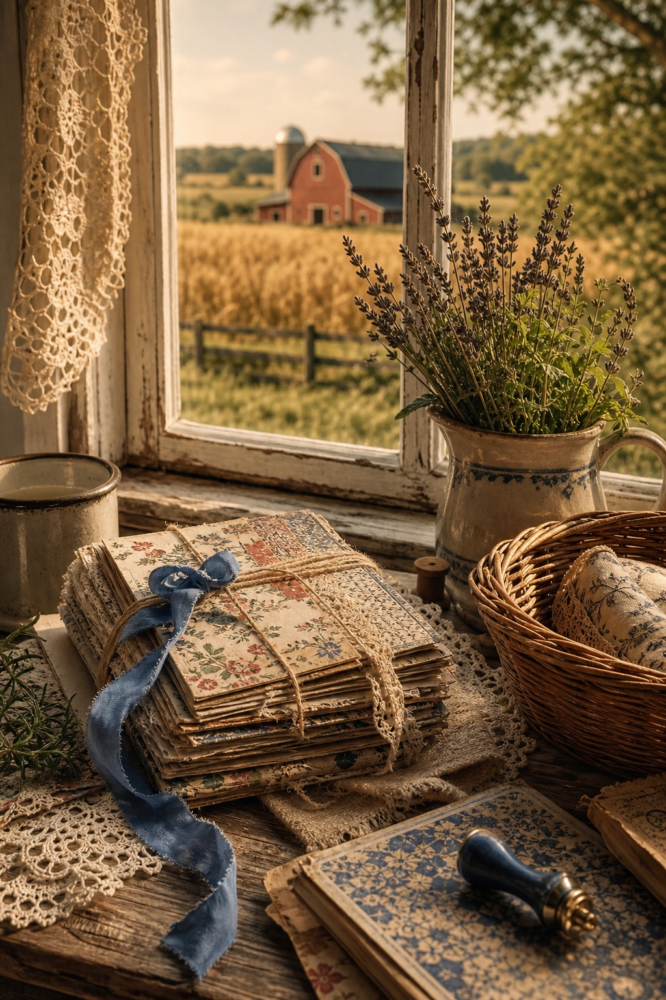
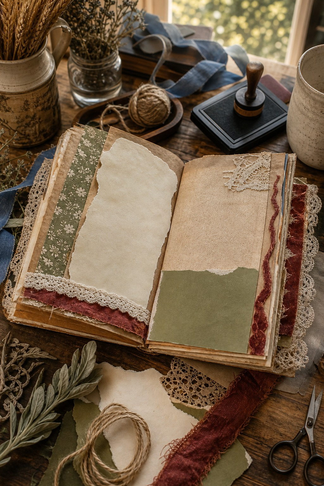
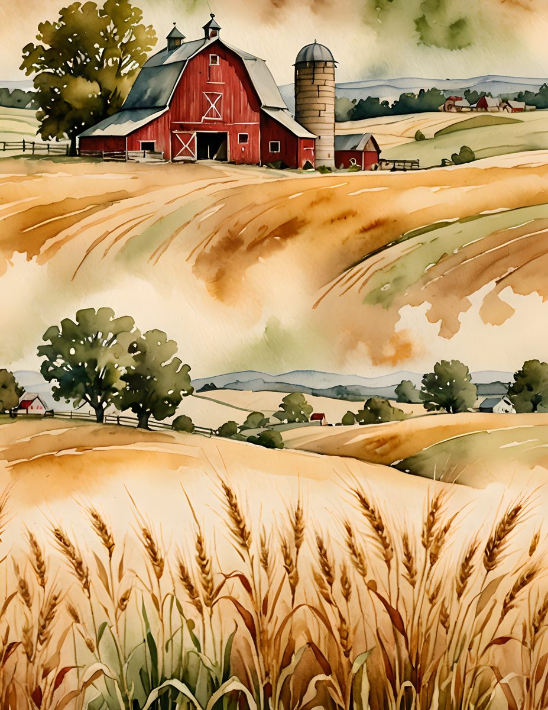
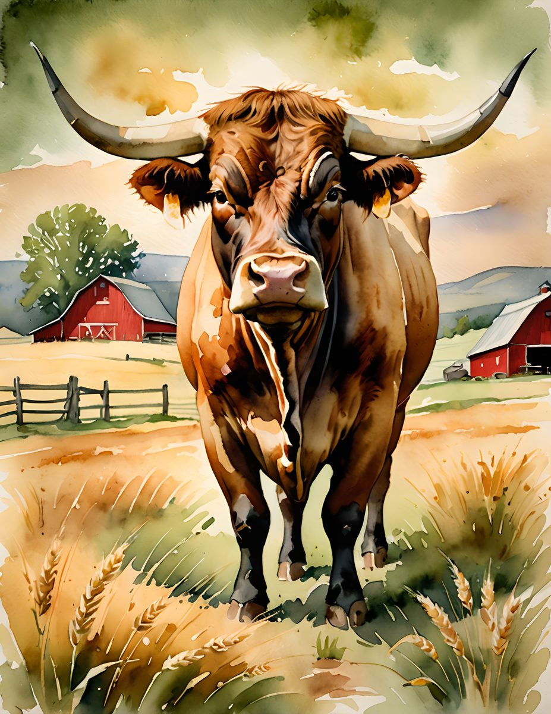
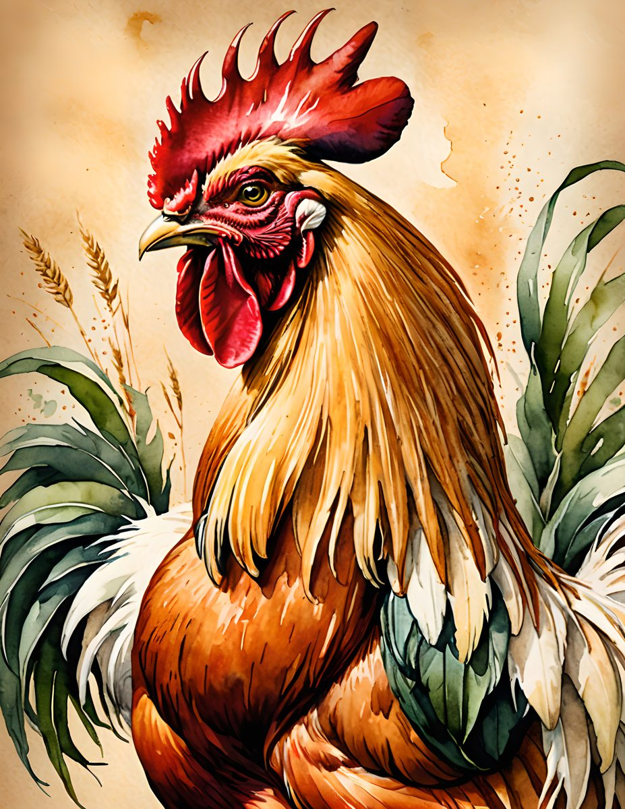

A farmhouse animal theme can be charming without becoming childish. The useful move is to treat the animals as story pieces and keep the rest of the page grounded: fields, barn red, wheat gold, olive green, and old cream paper.

The barn palette is the calmest version. Use it when you want a country page that feels open and airy: a field background, one red accent, olive green, wheat gold, and a soft cream journaling card.

The second palette leans into the path and wheat: red barn, clean cream, sage field, and a warm farm accent. It is a good palette for pockets, labels, and small journaling cards.

The third palette is stronger and more graphic, with deep field green, cream, olive, and barn red. Use it when a page needs a clearer country anchor without becoming too bright.

Keep one image in the article purely atmospheric. It should feel like the quiet around the journal: a window, a field, a basket, a ribbon, and enough warm light to make the country theme feel real.
Make it feel lived-in
The beautiful part is the repetition. Pick four colors from one page, then repeat them in tiny places: a tab, a thread, a torn edge, a sticker, a date label. The page starts to feel designed because the colors keep answering each other.

Real pages to start from
Use the matching farmhouse pages when you want a rustic animal journal that still feels designed. Choose one animal as the hero and let the fields and neutrals do the quiet work.



For more color inspiration, browse the full Sentimentalica journal archive and save the palette idea you want to try next.